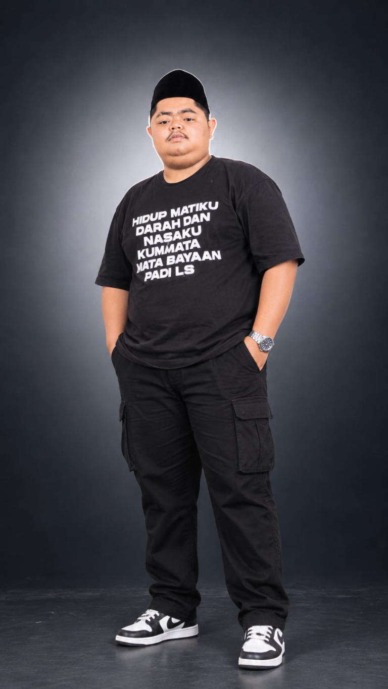
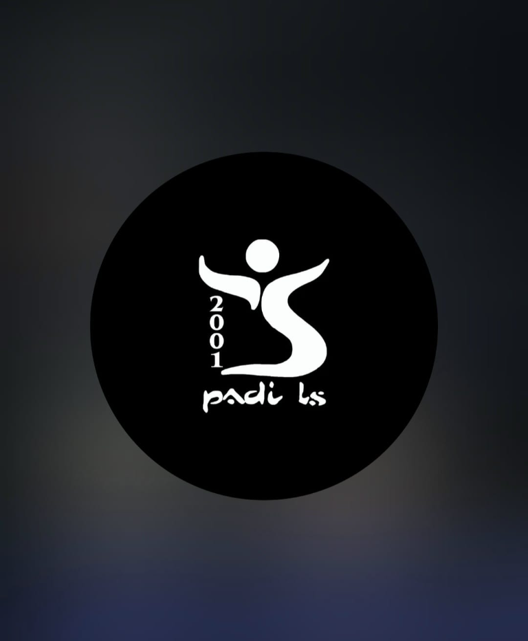

Halo, saya
ADIT FIRMANSYAH
Mahasiswa Teknologi Informasi | Sopir & Pengirim Rokok | CCTV Technician
"Membangun Masa Depan Melalui Pendidikan, Bisnis, dan Teknologi."

Tentang Saya
Saya Adit Firmansyah, mahasiswa semester 5 Program Studi Teknologi Informasi di Fakultas Teknik dan Transformasi Digital Universitas Annuqayah. Saya tidak hanya fokus pada perkuliahan, tetapi juga ingin terus berkembang lewat pengalaman nyata di luar kelas.
Pada pagi hari saya berkuliah di Program Studi Teknologi Informasi dan mengembangkan bisnis pengiriman ayam. Saya aktif sebagai anggota organisasi Sanggar PADI LS yang berdiri sejak tahun 2001. Pada malam hari saya berperan sebagai sopir sekaligus pengirim rokok, bertanggung jawab atas pengiriman serta distribusi pesanan kepada pelanggan. Pada sore hari, saya membuat dan memasang CCTV serta mendokumentasikan kegiatannya melalui TikTok.
Saya memiliki jiwa wirausaha, mandiri, disiplin, dan tertarik dengan perkembangan teknologi informasi.
Pagi Hari
Berkuliah dan mengembangkan bisnis pengiriman ayam
Malam Hari
Sopir dan pengirim rokok pada malam hari
Sore Hari
Pemasangan dan instalasi CCTV
Keahlian
Bar menunjukkan tingkat kemampuan praktik yang saya jalani sehari-hari, bukan sertifikasi.
CCTV Configuration
75%Basic Networking
65%Business Management
70%Distribution & Delivery
90%Time Management
80%Portofolio

Pengiriman Rokok
Kegiatan sebagai sopir sekaligus pengirim rokok kepada pelanggan pada malam hari.

Aktivitas Pribadi
Dokumentasi kegiatan dan momen pribadi Adit.

Proses Persiapan Barang
Dokumentasi aktivitas persiapan dan pengelolaan barang pengiriman.
Bisnis Pengiriman Ayam
Usaha yang sedang dikembangkan untuk melayani pengiriman dan distribusi ayam.
Pemasangan & Konten CCTV
Pembuatan dan pemasangan CCTV setiap sore, didokumentasikan melalui TikTok.
TikTok
Organisasi Sanggar PADI LS
Aktivitas organisasi dan dokumentasi bersama anggota Sanggar PADI LS.
Pendidikan
- Fakultas Teknik dan Transformasi Digital
- Program Studi Teknologi Informasi
- Semester 5
- Status Mahasiswa aktif
Hubungi Saya
Punya pertanyaan atau ingin bekerja sama? Kirim pesan lewat form ini, atau hubungi saya langsung.
- Adit Firmansyah
- +62 817-7648-0328
- maditiyafirmansyah657@gmail.com
- @ditts_k1a
- @kamera_kaberek_katemor44